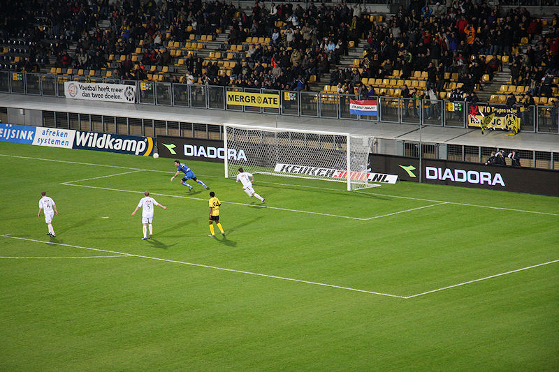
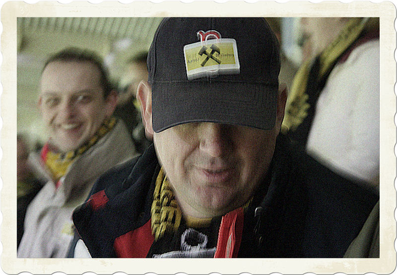
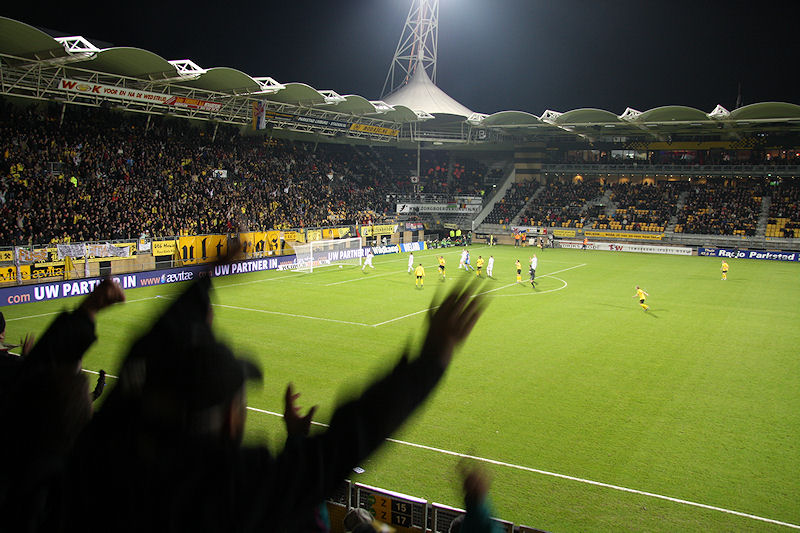

De weinige Vitessesupporters hadden een opmerkelijk doekje.
Saint Jacques Vinders.
Piet Velthuizen, de toekomstige Oranje-keeper!
Bodor drukt af...

...zijn schot belandt op de paal waarna de hevig geschrokken Piet de bal kan
vangen.

Oudere jongere met anti-FCL embleem op de patsj.
Kan gebeuren...
De eerste helft is grotendeels saai. Roda dwingt nauwelijks kansen af tegen
een zouteloos Vitesse.
Hadouir omspeelt enkele verdedigers, haalt hard uit en via de benen van
Velthuizen geeft Matondo het laatste tikje: 1-0, (32').
Invaller Sansoni levert de bal in bij Matondo die na matig dribbelwerk de
bal voor de voeten van Janssen brengt: 2-0, (49').

Een ongekende weelde...
Hadouir op weg naar 3-0, (56').
Invaller Cissé dichtbij een vierde treffer maar Pietje redt bekwaam.
Humbahumbatetereeee...
In de Kickoff: Oper, Narinx, Matondo, Castro en nog enkele medewerkers...

Mooi symbool.
Middenlimburgs bedrijfsleven in de Kickoff.
Wiel e.a.